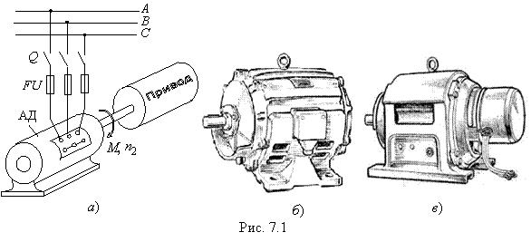

7.1.1. Назначение и области применения асинхронных машин
Асинхронные электрические машины &#*&22; это машины переменного тока, у которых частота вращающегося магнитного поля статора и частота вращения ротора не совпадают. Основное применение они находят в качестве двигателей. Асинхронные двигатели (АД) преобразуют электрическую энергию в механическую и являются потребителями электрической энергии (рис. 7.1а).Первый асинхронный двигатель был сконструирован в 1889 г. русским инженером М. О. Доливо-Добровольским.
|  |
Асинхронные трёхфазные двигатели - самые распространённые из всех видов электрических машин. Это объясняется тем, что они просты по конструкции, дёшевы, надежны в работе, имеют высокий КПД при номинальной нагрузке, выдерживают значительные перегрузки, не требуют сложных пусковых приспособлений.
Наряду с преимуществами АД имеют ряд недостатков, основными из которых являются: низкий коэффициент мощности (соsφ) при неполной нагрузке (при холостом ходе соsφ0 = 0,2...0,3), большой пусковой ток, низкий КПД при малых нагрузках, относительная сложность и неэкономичность регулирования их эксплуатационных характеристик и, в первую очередь, механических характеристик.
Асинхронные двигатели с короткозамкнутым (серии АК, рис. 7.1б) и с фазным (серии АО, рис. 7.1в) роторами разрабатывались и выпускались в нашей стране в виде единых серий:
А, АО (1949-1951 годы), А2, АО2 мощностью 0,6...100 кВт (1958-1960 годы), А, АК
(100...1000 кВт, 1952-1956 годы), А2, АК2 (100...1000 кВт, 1964-1965 годы), А3, АО3
(132...500 кВт), 4А и АИ (АИР) (0,06...400 кВт до настоящего времени).
В последние годы в России освоен выпуск новых серий асинхронных двигателей: RА (0,37...100 кВт), 5А (0,37...400 кВт) и 6А. Выпускаются также АД большой мощности с короткозамкнутым ротором серий АТД4, А4, ДА и др. (500...8000 кВт) на напряжения 6 кВ и 10 кВ и синхронные частоты f1 вращения 1500, 750, 600 и 500 об/мин, и с фазным ротором серий АОК2, АОК (200...500 кВт), АКСБ (600...1000 кВт), ВАК3
(1600 и 3400 кВт, n1 = 1000 об/мин) на напряжение 6 кВ, и микродвигатели серий АИР, УАД, 5АЕУ и др. мощностью до 600 Вт.